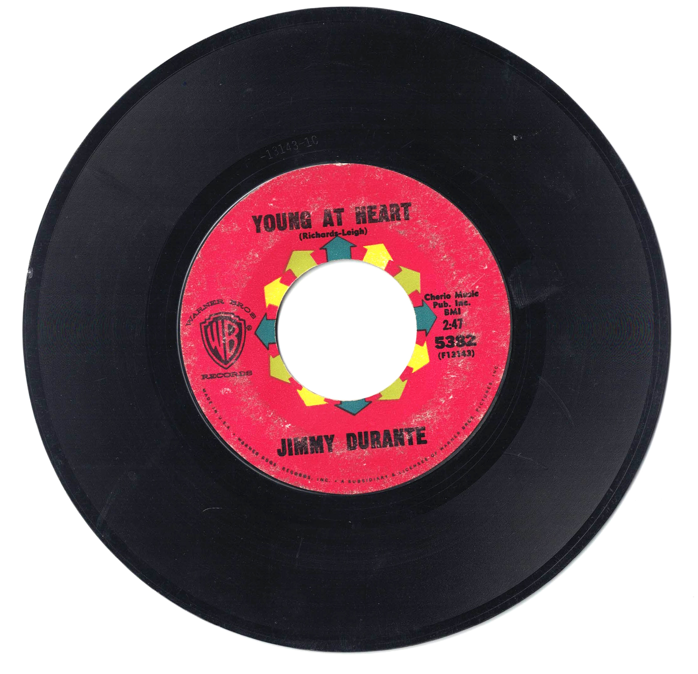

Product No. HEC-0127
$4.95
Shipping: $8.95
Description
45 RPM, 7-inch single
Full Description
Jimmy Durante (1893–1980) (Deceased) was an American comedian, actor, singer, and pianist known for his gravelly voice, oversized nose, and warm, sentimental style. Nicknamed "The Schnozzola," Durante became one of the most recognizable entertainers of the 20th century. Born in New York City, Durante began his career as a pianist in clubs and vaudeville before forming a successful comedy act with Lou Clayton and Eddie Jackson. His distinctive personality soon led to work in radio, movies, television, and recordings. Durante appeared in numerous films, including "The Phantom President," "The Man Who Came to Dinner," "It’s a Mad, Mad, Mad, Mad World," and "The Great Rupert." He was especially effective at combining comedy with genuine emotion, often ending performances with his famous farewell, "Good night, Mrs. Calabash, wherever you are." On radio and television, Durante became a beloved variety performer whose fractured English, musical numbers, and playful catchphrases made him instantly recognizable. His recordings included sentimental songs such as "September Song," "As Time Goes By," and "Make Someone Happy." Durante's voice also became familiar to later generations through the 1969 animated television special "Frosty the Snowman," which he narrated and for which he performed the title song. Jimmy Durante died in 1980 at age 86. His unique voice, comic timing, musical talent, and affectionate stage personality made him one of the most enduring entertainers of classic American show business.
Condition
Good condition